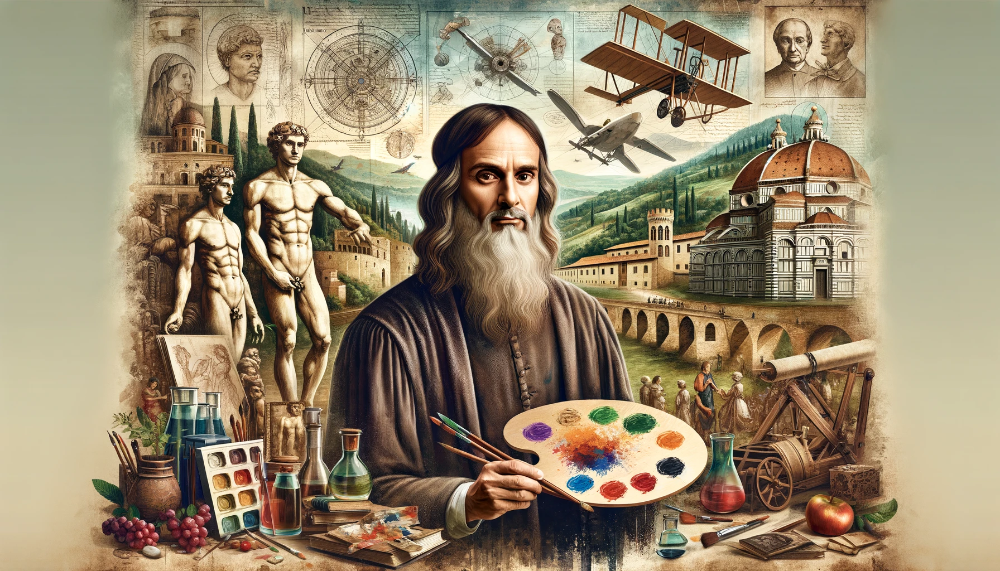

| inicio | logros | galeria | |
Sus logros |
|||
|  | |||
Leonardo da Vinci fue un genio del Renacimiento que destacó sobre todo por unir arte y ciencia como nadie antes. Creó pinturas icónicas como La Mona Lisa y La Última Cena, donde aplicó técnicas innovadoras para lograr rostros más vivos y escenas más realistas. Su curiosidad lo llevó a estudiar el cuerpo humano con una precisión extraordinaria, produciendo dibujos anatómicos que anticiparon descubrimientos médicos de siglos posteriores. También imaginó máquinas adelantadas a su tiempo: artefactos para volar, vehículos que se movían solos y diseños de armas y sistemas hidráulicos que mostraban un entendimiento sorprendente de la física. Además, propuso ideas urbanísticas para ciudades más limpias y funcionales. En todo su trabajo, Leonardo combinó observación, creatividad y método científico, dejando un legado que influye en el arte, la ciencia y la ingeniería hasta hoy. |
|||